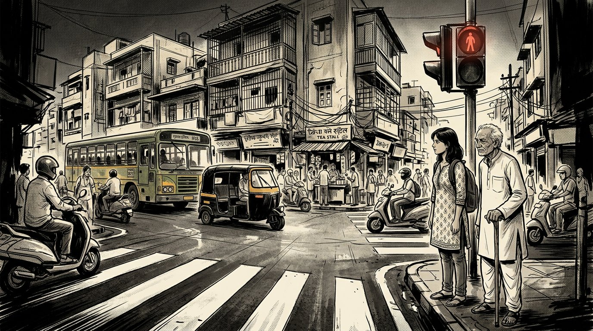
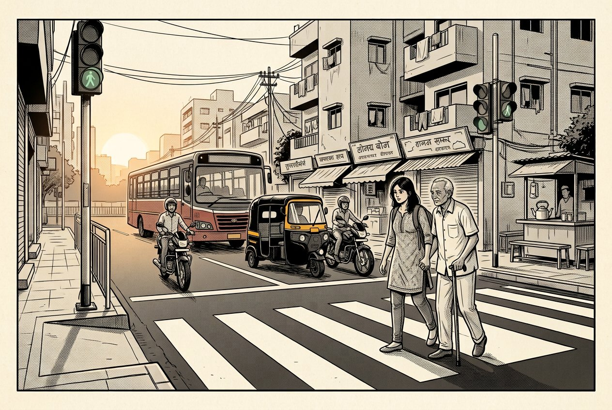

11 SEC
young student
The green figure blinked twice. He was already on the other side.
15
Loading the city...
15
SECONDS TO CROSSA STORY ABOUT THE TIME WE TAKE FROM EACH OTHER
A city gave everyone the same amount of time.
But it forgot that people move differently.
AN INTERACTIVE STORYVERSE EXPERIENCE · 2026HONK!
— SILENCE —

01 / 10 EVERY MORNING
The same road.
The same fifteen seconds.
Tara and Dadu have crossed here every morning for years.
Today, you decide when they step off the curb.
A small green light.
A very large expectation.
“Maine kya galat kiya?” What did I do wrong?
02 / 10 THE SAME DISTANCE
A crossing does not change.
The person crossing does.
15 SECEqual does not always mean fair.
≠03 / 10 OBSERVE
At first, it is just a street.
Tap what you notice.
04 / 10 QUESTION
Tara follows the timer back to the room where it was set.
AVERAGE
PEDESTRIAN
ENGINEER“Most pedestrians can cross within fifteen seconds.”
TARA“Average?”
TARA“But who is the average pedestrian?”
THERE IS NO AVERAGE PERSON.
05 / 10 THE MIRROR
Scroll down. The reflection is closer than it looks.
“Roads are horrible.”
“Government does nothing.”
“This city has no discipline.”
We blamed the system so often
that we forgot—
And sometimes,
we are the system.
06 / 10 TARA'S FIELD NOTES
One morning. Five crossings.
She starts writing down what she sees.
11 SEC
The green figure blinked twice. He was already on the other side.
TARA'S FIELD NOTES, NOT A CITYWIDE SURVEY. SMALL ACTS, REPEATED, BECOME A PATTERN.
“The timer wasn't the problem.
The assumption was.”
07 / 10 MAKE IT VISIBLE
Tara makes a poster small enough to carry.
And a request big enough to share.
For a while, nothing happens.
Then one person stops
before the crossing.
08 / 10 THE CHAIN REACTION
No score. No hero.
Just a small choice, then another.
A motorcyclist pulls onto the ramp.
“Just for a minute,” he says. A pedestrian is coming.
ONE PERSON CAN'T
CHANGE THE CITY.

09 / 10 THE SAME CROSSING
Not a different street.
A different way of sharing it.
The city finally gave them more time.
But that wasn't the real change.
People stopped stealing time
from one another.
SCROLL TO WALK WITH HIM · OR USE THE SLIDER
10 / 10 A CITY IS A VERB
The crossing becomes a street.
The street becomes a neighbourhood.
The neighbourhood becomes a city.
A civil society doesn't begin with big laws.
It begins with small things
we choose not to do.
DON'T DESIGN FOR THE AVERAGE HUMAN.
BUILD FOR HUMANITY.
THE LAST PANEL YOUR TURN
Choose one small thing. Leave it here for the next person.
Your note stays on this device. No account. No tracking. Nothing is sent anywhere.
MAYBE CIVIC SENSE
IS JUST EMPATHY
MADE VISIBLE.